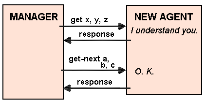

The five
SNMP
Protocol Data Units (PDU)
are in SNMP V.1 :
Get-request
is used to request the values of one or more MIB variables.
Get-next-request
is used to read the values of variables in the MIB but sequentially. It is
often used to read though a table of values. After a first read with the
get-request, get-next-request are used to read through the remaining rows.
Set-request
is used to update one of the MIB values.
Get-response
is returned as an answer to a get-request, a get-next-request or set-request
message.
Trap
is used to support significant events (e.g. a cold or a warm restart or a link
that has gone down).
UNIT OF INFORMATION
A get-request or set-request can read or write a single or several items. An
item is a simple variable (example : system name). We can also say that SNMP
recognises that variables are leaves at the bottom of the naming tree.
The problem is that a
manager
do not know all the variables. Even when a new
implementation replace an old one, he do not know all the variable. The
get-next-request is helpful then. The manager is able to walk through the
MIB
using the get-next-request command. Thus, the manager know all the
OBJECT IDENTIFIER
. When MIB variable are added, the old meanings of the MIB do not
change and there are new values in the
table
.
The MESSAGE FORMAT in SMMP
How does it works ? The next figure shows quickly how.

Manager talking to a new agent implementation.
Get-request and get-response Message Formats
The fields contained in those messages are the following one :
Version : version of SNMP (0 is for version 1)
Community : password used to control access to node information. It does not
provide a lot of protection against spying on the
LAN
.
Command : one of the five message type.
Request ID : used to correlate the request and its answer. Because a station
can shoot hundreds of request at the same time.
Error status : in response, it is used to indicate if the request was
successful or not.
Error index : in case of error indicates which variable in the request caused
problem.
A list of pairing
OBJECT IDENTIFIER
(string of integer) and variable value
of the parameter pointed by the OBJECT IDENTIFIER.
The get-request and the get-response contain the same fields. So it is easy
for an
agent
to build an answer to a request just by filling the holes in the
get-request. Thus, get-request contains fields set a 0 or NULL values.
A get-request can be sent for multiple variables. Then it contains the list of
the variables we want to be retrieved. The get-response fills each value from
each variable of the list.
The problem with SNMP version 1, is that if for one of the requested variable,
the agent is unable to provide a value, the whole get-request will fail. Even
if it is one out of the ten variables we wanted to retrieve.
The maximal number of value to retrieve is limited by the maximum message size
handle by the manager and the agent. This maximum size is expected to be over
484 bytes in SNMP standards.
Get-next-request
The get-next-request, in its simplest use, is for a walk through a
table
one row
at a time.
The get-next-request have the same overall format as get-request and
get-response. The Command type identifies which is which.
Different sets of variables are appropriate for bridges, routers and hosts. The
variables in a pair of routers may be different because the
interface
can be
different in the two devices (e.g. one is Ethernet and
FDDI
LANs, the other
Token-Rings
and T1 lines).
To know what variables are stored at a node, we can manage the node by manually
creating a master configuration database in a management station. We could,
in this database, record the type of node and the categories of MIB variables
supported at the node.
In this case we would have to maintain the database by hand, each time by adding
and deleting the entries each time the configuration changed.
The other way to know the stored variable at the node is to implement a
management application that will dynamically discovers nodes of the network and
ask the node what are the variables and what they support. This second method
is the way that good management station operates. The station can operate this
way because of the get-next-request operator.
The Communities
The access to an agent is restricted by the community. The
manager
sending a
message to the agent gives its community. The community defines what level of
access the manager have. Agents have to be configured in order to know one or
more community, and which right (level of access) each community owns.
There is also community right for traps. The agent needs to know where to send
its traps. It is also configurable.